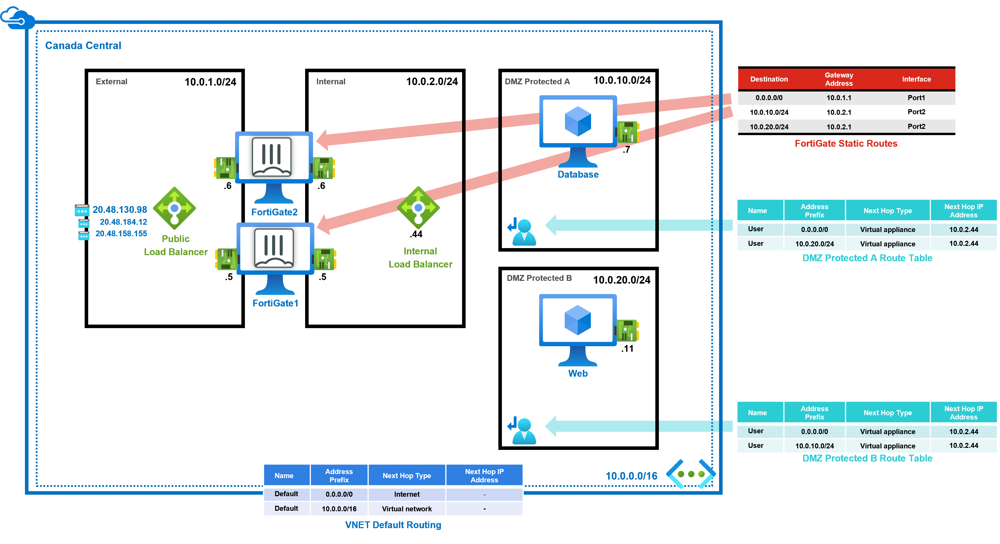

Fortinet Reference Architecture for Azure
Considerations and Justifications
-
FortiWeb is primarily designed for web traffic, specifically HTTP/HTTPS, and offers 60+ protections including machine learning and signature-based protections.
-
FortiGate is designed for managing all other types of traffic, supporting multiple protocols, and providing application control and intrusion prevention systems.
WAF Feature Comparison: FortiWeb vs. FortiGate
| Feature | FortiGate | FortiWeb |
|---|---|---|
| Web App Attack Signatures | Yes | Yes |
| WAF Signatures (FortiGuard Subscription) | No | Yes |
| IP Reputation (FortiGuard subscription) | Yes | Yes |
| Layer 7 DoS Protection | Yes | Yes (+ Bot validation) |
| Machine Learning based Anomaly Detection | No | Yes |
| Machine Learning based Bot Mitigation | No | Yes |
| Machine Learning based API Protections | No | Yes |
| HTTP RFC Validation | Yes | Yes |
| API Protection | No | Yes |
| Cookie Protection, CSRF | No | Yes |
| Browser Security (Man-in-the-Browser) | No | Yes |
| Syntax based detection | No | Yes |
| Antivirus/Antimalware | Yes | Yes |
| Web App Attack Correlation | No | Yes |
| Web App Vulnerability Scanner | No | Yes |
| Web Filtering | Yes | No |
| Data Leak Prevention | Yes | Yes |
| Attack Alert Tuning | No | Yes |
| Web Defacement Protection | No | Yes |
| Authentication Offload | Yes | Yes |
| Site Publishing and SSO | SSO | Yes |
| PCI Compliance | Yes | Yes |
| Dedicated WAF Throughput | No | Yes |
| SSL Inspection | Yes | Yes |
FortiWeb Reference Architecture
High-Level View
Click on the image if you want to enlarge it.

Detailed View

Detailed View with Routes

Internet originating Non-HTTP(S) flows (i.e. SSH etc…)

Internet originating HTTP(S) flows

Internal originating Non-HTTP(S) flows (i.e. SSH etc…)
{kind=link}
{kind=link}
FortiGate Reference Architecture
FortiGate-VM – Active-Passive with Fabric connector
Strengths
- Failover of existing connections
- Support of non-TCP/UDP protocols (e.g. ESP, ICMP)
- Source IP of connections that ingress from the Internet is not modified
Weaknesses
- Failover time is dependent on Azure API response time and can vary from approximately 45 seconds to up to more than 2 minutes
- As with all active-passive designs, the passive node is not passing traffic in the majority of times
Uses
- Architectures requiring IPSEC VPN with NAT-T support (like IOT or other non-FortiGate IPSEC termination)
{kind=link}
Detailed View
FortiGate1 is Active

FortiGate-VM – Active-Passive with Load Balancers
Strengths
- Relatively fast fail over (10 to 20 seconds on average)
- Source IP of connections that ingress from Internet is not modified
Weaknesses
- Existing established connections are not failed over(Azure Load Balancer limitation)
- Only supports UDP or TCP connections (Azure Load Balancer limitation)
- As with all active-passive designs, the passive node is not passing traffic in the majority of times
Uses
- Fortinet Azure SDWAN hub
High-Level View
{kind=link}
Detailed View
{kind=link}
FortiGate-VM – Active-Active with Load Balancers
Strengths
- Relatively fast fail over (10 to 20 seconds on average)
- Both firewall VMs are processing traffic during normal operations
Weaknesses
- Existing established connections are not failed over(Azure Load Balancer limitation)
- Only supports UDP or TCP connections (Azure Load Balancer limitation)
- Source IP of connections that ingress from Internet is often modified with Source NAT
Uses
- Recommended Architecture
High-Level View

Detailed View
Multiple Public IPs 
{kind=link}
Azure Gateway Load Balancer and FortiGate
- The integration of Fortinet FortiGate Next-Generation Firewall (NGFW) with Azure Gateway Load Balancer (GWLB) simplifies deployment and configuration while reducing outages.
- The Azure GWLB supports service chaining to enable transparent deployment of firewall NVAs without introducing management overhead.
- It uses the VXLAN protocol for encapsulation and decapsulation, maintaining flow symmetry for traffic inspection by firewall NVAs.
Reference Architecture
Consumer Load Balancer Frontend Public IP

Frequently Asked Questions
Q – Does this apply to other Public Clouds ?
A – This Architecture is specific to Azure.
Q – Why are the FortiWeb VMs and FortiGate VMs in parallel instead of series for Internet web flows?
A – FortiWeb has integrated IPS and AV thus no need to duplicate on FortiGate using up cloud computing cycles.
Q – Why is the FWB Internal LB in the FWBExternal Subnet and not the FWBInternal Subnet?
A – Because it is used only for traffic passing through SDWAN.
Q – Why is there no Azure Internal LB in the FWBInternal subnet
A – FortiWeb can only be deployed in reversed proxy in Azure and thus the traffic replies automatically go back to the appropriate FortiWeb VM thus negating the needs to have Azure Internal Load Balancer in HA Ports.